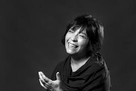

Música, cantante, licenciada en filosofía y docente argentina

Ha compartido escenario con otros reconocidos artistas del folclore, del rock y de la música popular como:
Luis Alberto Spinetta, Mercedes Sosa, Teresa Parodi, Fernando Cabrera, Ana Prada, Lisandro Aristimuño, Jorge Fandermole, Liliana Vitale, Carlos Aguirre y Adrián Iaies, entre otros.
En Rosario conoció al músico Fito Páez, quien la incentivó a dedicarse por completo a la música.